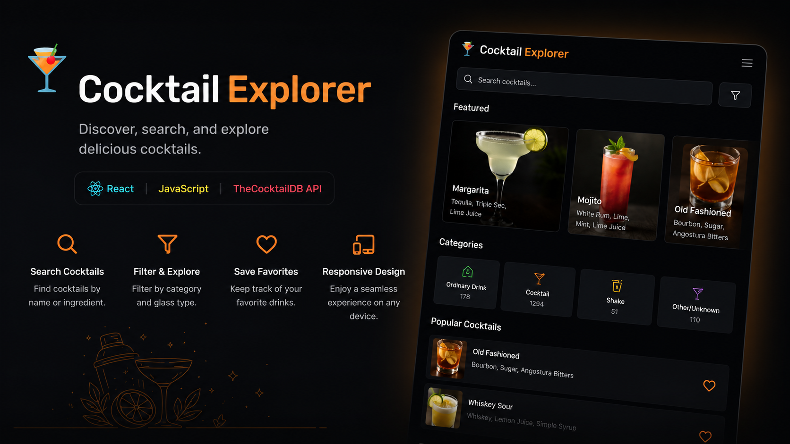
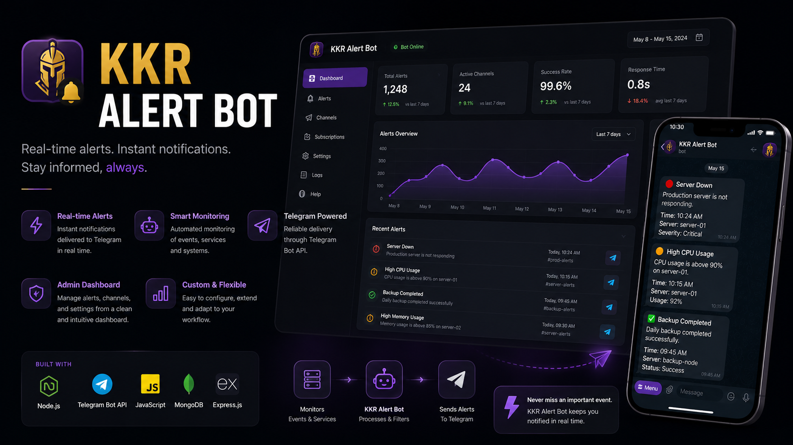

Portfolio
B.Tech CSE Student | Full-Stack Developer | Building Web Apps and Automation Tools
About Me
Hi, I'm Sautrik — a web developer who loves turning ideas into visually engaging and interactive experiences. I enjoy blending logic, design, and smooth animations to create websites that feel alive and intuitive.
I'm currently learning full-stack development, building my foundation in HTML, CSS, JavaScript, and React, while also exploring backend fundamentals in Node.js.
Alongside web technologies, I'm actively learning C++ to strengthen my problem-solving, algorithmic thinking, and core computer science skills.
Whether it's a dynamic game, an animated interface, or a full website — I aim to deliver clean code, meaningful design, and a memorable user experience.
Tech Stack
Projects
Inkwell Blog
A full blog platform supporting post creation, rendering, and management — built end-to-end with JavaScript and Node.js.
Advanced Calculator
A polished, feature-rich calculator built with pure HTML, CSS, and JavaScript — zero dependencies.

Cocktail Explorer
An Express app that pulls cocktail recipes from TheCocktailDB API — making drink discovery feel effortless.

KKR Alert Bot
A Telegram bot that fires live KKR match alerts — wired up with Node.js, Express, the Telegram API, and a cricket scores API.
Contact
Find me on the web — always open to interesting conversations.